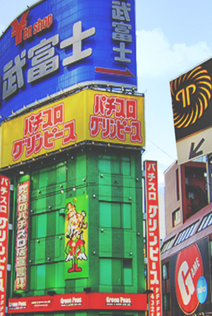
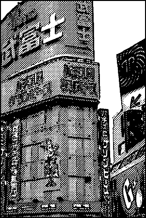
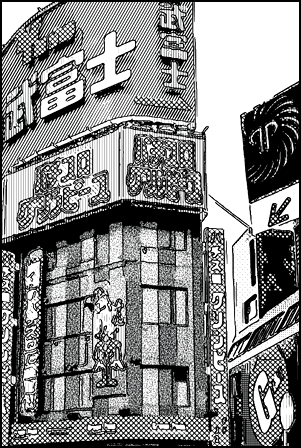

| SIGGRAPHASIA2008 | ||
|
Richness-Preserving Manga Screening |
||
|
ACM Transactions on Graphics (SIGGRAPH Asia 2008 issue), Vol. 27, No. 5, December 2008, pp. 155:1-155:8 |
||
|  |  |  |
| Input | Result by commercial software | Our result |
|
Abstract Due to the tediousness and labor intensive cost, some manga artists have already employed computer-assisted methods for converting color photographs to manga backgrounds. However, existing bitonal image generation methods usually produce unsatisfactory uniform screening results that are not consistent with traditional mangas, in which the artist employs a rich set of screens. In this paper, we propose a novel method for generating bitonal manga backgrounds from color photographs. Our goal is to preserve the visual richness in the original photograph by utilizing not only screen density, but also the variety of screen patterns. To achieve the goal, we select screens for different regions in order to preserve the tone similarity, texture similarity, and chromaticity distinguishability. The multi-dimensional scaling technique is employed in such a color-to-pattern matching for maintaining pattern dissimilarity of the screens. Users can control the mapping by a few parameters and interactively fine-tune the result. Several results are presented to demonstrate the effectiveness and convenience of the proposed method. |
Paper (PDF, 18.4M) |
|||
|
More examples (PDF, 5.35M) |
||||
|
Video
(AVI, 58.3M) |
||||
|
BibTex:
@article{qu-2008-richness,
|
|
Press |
||